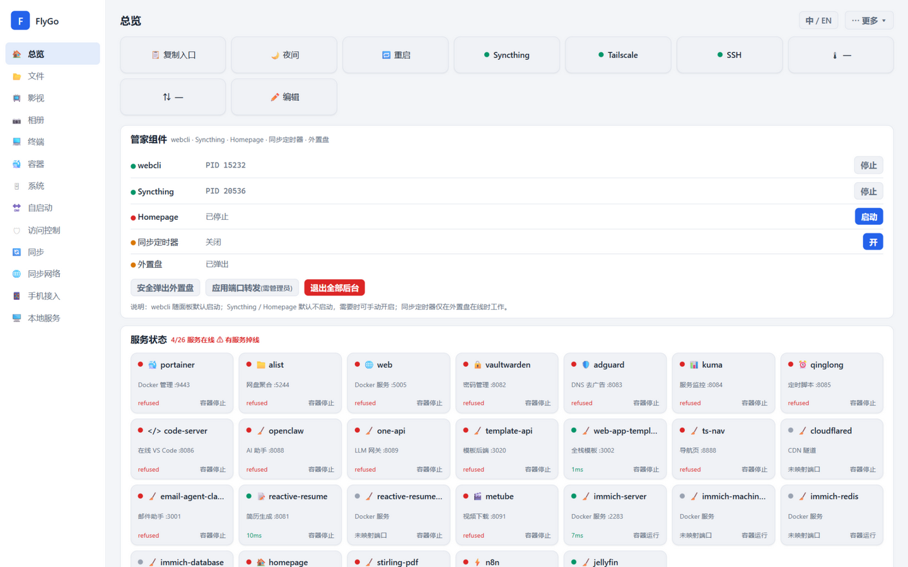

Turn a Windows PC into a full NAS server — files, movies, photos, sync, remote access and containers, all in one dashboard.

No new hardware, no Linux adventure — one Windows PC becomes a complete NAS.
Quick actions, housekeeper components, service status — a mirror of the whole NAS.
The overview page condenses daily operations into one row of buttons: copy entry, night mode, reboot, safe eject of external drives — one click each.
A NAS is more than file sharing — movies, photos, passwords and automation, the whole suite in one go.
Sync, mesh networking, mobile access — away from home, your data is still at hand.
An old machine can still serve — engineering is about getting full value from what you already have
Back to Technical Work →